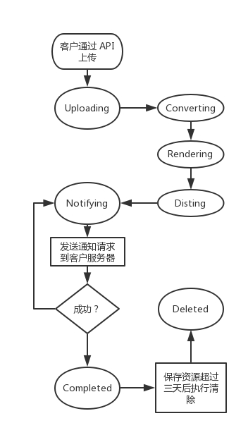

简介
欢迎使用PP匠SaaS服务API！你可以使用我们的API，将PPT上传到PP匠网站，转化为H5网页，并通过接口下载到本地。
如你在使用过程中遇到问题，请加QQ群（459962155）或微信（GockGe）咨询。
请求
根目录
请用HTTPS发起所有请求到以下根目录：
https://ppj.io/api/
如果你的API类型为测试，请使用以下根目录：
https://sandbox.ppj.io/api/
权限验证
你可以使用以下代码验证权限：
curl -i -H "X-PPJ-Credential: your_access_key" https://ppj.io/api/jobs
或者添加请求参数：
curl -i 'https://ppj.io/api/jobs?_credential=your_access_key'
请将
your_access_key替换为你自己的Access Key。
PP匠使用Access Key验证所有的API请求，你可以在PP匠网站的开发信息页面查看。
我们要求所有请求增加一个以X-PPJ-Credential为键Access Key为值的请求头（Request Header），形式如下：
X-PPJ-Credential: your_access_key
如果你的网络请求库不方便设置请求头，也可以使用以_credential为键Access Key为值的请求参数（Query String）的方式，形式如下：
_credential=your_access_key
响应
- 未经特别说明，所有API以
application/json格式响应请求； - 时间戳以
ISO 8601格式返回，如2017-03-16T02:20:39+00:00。通常也会同时返回一个精确到秒的Unix时间戳。
200 OK
Status: 200 OK
Content-Type: application/json
{
"token": "token",
"name": "2017年第二季度财报",
"state": "completed"
}
如果请求正确完成，则以200的状态码响应，并返回一个JSON对象，一般格式如右侧所示：
400 Bad Request
Status: 400 Bad Request
Content-Type: application/json
{
"message": "上传文件的MD5与参数中提供的MD5不符。",
"type": "Error"
}
如果请求存在逻辑错误，如参数验证不通过等，则以400的状态码响应，并返回一个JSON对象用以说明错误原因，一般格式如右侧所示：
401 Unauthorized
Status: 401 Unauthorized
Content-Type: application/json
{
"message": "Access Key无效，请查看开发信息页面或文档。",
"type": "UnauthorizedError"
}
如果提供的Access Key不正确或者以错误的方式添加请求头，则以401的状态码响应，并返回一个JSON对象用以说明错误原因。
403 Forbidden
Status: 403 Forbidden
Content-Type: application/json
{
"message": "客户端IP不在白名单中，请在后台设置。",
"type": "PermissionError"
}
如果使用白名单之外的IP发起请求，或者请求的参数签名不正确，则以403的状态码响应，并返回一个JSON对象用以说明错误原因。
404 Not Found
Status: 404 Not Found
Content-Type: application/json
{
"message": "您所请求的资源不存在。",
"type": "NotFoundError"
}
如果请求的资源不存在，则以404的状态码响应，并返回一个JSON对象用以说明错误原因。
500 Internal Server Error
Status: 500 Internal Server Error
Content-Type: text/html
如果服务器出现异常，则以500的状态码响应。
503 Service Unavailable
Status: 503 Service Unavailable
Content-Type: text/html
如果我们正在更新服务，可能出现短暂的服务不可用的情况，这时会以503的状态码响应，请稍后重试。
Jobs
我们使用Job来指代一次PPT转H5请求。
Job的生命周期
一个Job可能经历以下状态变化。

uploading，converting，disting：表示服务器正在执行转换notifying：正在通知客户服务器，此时可通过API下载生成的H5文件completed：转换并通知完成，此时可通过API下载生成的H5文件deleted：所有资源已被移除，此时无法通过API下载生成的H5文件halted：转换过程出现错误，已终止
获取所有Job
curl -i -H "X-PPJ-Credential: ppj_is_great" \
'https://ppj.io/api/jobs?start_date=2017-07-31'
以上命令将返回如下格式的数据：
Status: 200 OK
Content-Type: application/json
{
"count": 1,
"tokens": [
"fZoYvkua34zqYny8"
]
}
GET https://ppj.io/api/jobs
参数表
| 参数 | 类型 | 说明 |
|---|---|---|
| start_date | DateTime | 「可选」晚于该时间（含）创建的Job |
| end_date | DateTime | 「可选」早于该时间（不含）创建的Job |
响应
返回满足条件的所有Job。
count：满足条件的Job的数量；tokens：满足条件的Job的标识组成的数组。
创建Job
curl -i -H "X-PPJ-Credential: ppj_is_great" https://ppj.io/api/jobs -XPOST \
-F 'file_source=@demo.pptx' \
-F 'file_md5=5951595bace948c6fd5e0f415b16a16e'
请根据实际情况替换以上所有参数。
以上命令将返回如下格式的数据：
Status: 200 OK
Content-Type: application/json
{
"token": "kuSzcH5AwaDY",
"name": "demo",
"state": "completed",
"source_filename": "demo.pptx",
"source_filesize": 1826642,
"total_pages": 14,
"last_error": null,
"created_at": "2017-07-24T08:36:03.872Z",
"created_at_in_ts": 1500885363
}
如果出现业务逻辑上的错误：
Status: 400 Bad Request
Content-Type: application/json
{
"message": "上传文件的MD5与参数中提供的MD5不符。",
"type": "Error"
}
POST https://ppj.io/api/jobs
参数表
| 参数 | 类型 | 说明 |
|---|---|---|
| file_source | File | 文件流 |
| file_md5 | String | 「可选」源文件的MD5值，提供该值时将校验文件完整性 |
响应
如果创建成功，返回该Job的信息，各字段说明如下：
token：标识，用于后续的查询；name：名称；state：状态，见「Job的生命周期」；source_filename：源文件名；source_filesize：源文件大小，单位为字节；total_pages：源文件总页数；last_error：转换过程中的错误原因；created_at：创建时间，ISO 8601格式；created_at_in_ts：创建时间，精确到秒的Unix时间戳。
如果上传文件的MD5与参数中提供的MD5不符，或者其他业务逻辑上的错误，返回400 Bad Request。
查询特定 Job
curl -i -H "X-PPJ-Credential: ppj_is_great" https://ppj.io/api/jobs/kuSzcH5AwaDY
请将
kuSzcH5AwaDY替换为具体的Job标识。以上命令将返回如下格式的数据：
Status: 200 OK
Content-Type: application/json
{
"token": "kuSzcH5AwaDY",
"name": "demo",
"state": "completed",
"source_filename": "demo.pptx",
"source_filesize": 1826642,
"total_pages": 14,
"last_error": null,
"created_at": "2017-07-24T08:36:03.872Z",
"created_at_in_ts": 1500885363
}
如果Token对应的Job不存在：
Status: 404 Not Found
Content-Type: application/json
{
"message": "您所请求的资源不存在。",
"type": "NotFoundError"
}
GET https://ppj.io/api/jobs/{token}
参数表
| 参数 | 类型 | 说明 |
|---|---|---|
| token | String | Job 标识 |
响应
如果Token对应的Job存在，则返回与「创建Job」相同的对象；否则返回404 Not Found。
下载转换完毕后的H5文件
curl -H "X-PPJ-Credential: ppj_is_great"
https://ppj.io/api/jobs/kuSzcH5AwaDY/download
-o archive.zip
请将
kuSzcH5AwaDY替换为具体的Job标识。如果Job可供下载，返回二进制流：
Status: 200 OK
Content-Type: 'application/zip'
Content-Disposition: attachment; filename="kuSzcH5AwaDY.zip"
Content-Transfer-Encoding: binary
{binary data}
如果Job没有转换完成：
Status: 400 Bad Request
Content-Type: application/json
{
"message": "项目还没有转换完成。",
"type": "Error"
}
GET https://ppj.io/api/jobs/{token}/download
参数表
| 参数 | 类型 | 说明 |
|---|---|---|
| token | String | Job 标识 |
响应
如果Job已经转换完成可供下载（notifying或completed状态），则返回zip格式的二进制流；否则返回400 Bad Request。
如果Token对应的Job不存在，返回404 Not Found。
Quotas
查询可用额度
curl -i -H "X-PPJ-Credential: ppj_is_great" \
'https://ppj.io/api/quotas'
以上命令将返回如下格式的数据：
Status: 200 OK
Content-Type: application/json
{
"summary": {
"permanents": 15,
"permanents_left": 10
}
}
GET https://ppj.io/api/quotas
响应
返回该账号下的额度汇总信息。
summary.permanents：项目总额度；summary.permanents_left：项目剩余额度。
回调
将PPT转化成H5通常需要1-3分钟，如果文件较大或较复杂，转换时间可能更长。当转化完成或出现异常时，PP匠服务器会主动发送一个通知请求到客户服务器，以告知客户下载转化后的H5文件或转换失败。
配置回调地址
Status: 200 OK
Content-Type: application/json
{
"nonce": "请求中的nonce值"
}
你可以使用以下命令测试你的回调地址：
curl -i https://your-server.com/hook -d 'type=verify&nonce=a-random-string'
请在开发信息页面的「调用配置 - 回调地址」部分填写你的回调地址。我们会以POST请求的方式请求该地址，并带上以下参数：
| 参数 | 类型 | 说明 |
|---|---|---|
| type | String | 固定为verify，表示请求类型为验证 |
| nonce | String | 随机字符串 |
请以右侧的格式响应该请求。
通知请求
我们将发送类似下面的请求：
curl -i https://your-server.com/hook -d 'type=complete&token=kuSzcH5AwaDY'
如果你的回调地址成功收到我们的请求，请返回状态码
200。
Status: 200
当一个Job转换成功或者出错时，PP匠会主动发一个通知请求来告知客户。
参数表
| 参数 | 类型 | 说明 |
|---|---|---|
| token | String | Job 的标识 |
| type | String | Job 处理结果。成功时为complete，失败时为error |
| code | Integer | 处理失败时提供，表示出错的状态码。1 表示PP匠服务器内部出错导致无法转化, 2 表示上传的PPT源文件有问题，导致无法转化 |
期待响应
如果你的回调地址成功收到我们的请求，请返回状态码200。
错误重试
一个通知请求需要在10秒内回复，如果超时或者返回的状态码非200，我们将认为该请求失败，并在间隔一定时间后重新发送请求。我们会以以下公式计算间隔时间（单位为秒），且最多尝试25次。
(retry_count ** 4) + 15 + (rand(30) * (retry_count + 1))
安全措施
使用https
请使用https请求我们的API，尝试使用http将得到400错误。此外，我们建议您在客户端验证CA证书有效性。
设置IP白名单
curl -i -H "X-PPJ-Credential: your_access_key" https://ppj.io/api/jobs
Status: 403 Forbidden
Content-Type: application/json
{
"message": "客户端IP不在白名单中，请在后台设置。",
"type": "PermissionError"
}
如果你希望只有特定机器发起的请求才被接受，则可以在开发信息页面的「调用配置 - IP 白名单」部分设置。我们支持以下格式：
允许指定IP
220.181.57.217
允许指定IP段
220.181.57.0/24
允许多个IP或IP段
220.181.57.217;220.181.57.0/24
使用 IP 白名单范围外的 IP 发送请求将返回403 Forbidden错误。
案例
目前提供 php 和 node.js 版本的实例代码，请查看 Github
感谢您的耐心阅读 ❤️